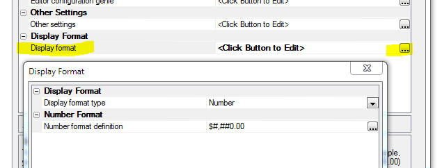
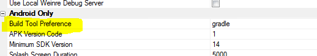
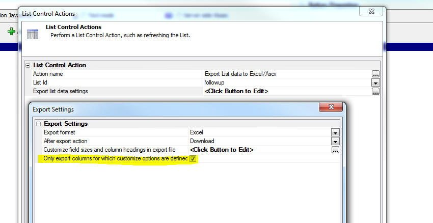

This is a list of release notes for Alpha Anywhere 4.12 to verify/move into the help system. The following directories are associated with this file: "Alpha_4.3.2_ReleaseNotes_files"
As this content is moved into the help system, please delete it from this file.
Guidelines:
UX Component - Panel Navigator - A bug was introduced in build 3629 that resulted in a child Panel not displaying correctly after a command that set focus to the child Panel without animation.
UX Component - Slider Control - Show/Hide - If a slider control had the message area turned on, when the control was hidden using a client-side show/hide expression, the message area was not hidden.
UX Component - Slider Control - Set Value - If a slider control had the message area turned on, when the value in the control was set using the .setValue() method, the slider message was not updated. The message was only updated when you dragged on the slider.
Application Server - Performance - Made a change to the algorithm used to reduce priority on busy threads.
| UX Component - PhoneGap | Sending Push Notifications using the Pushwoosh Service |
A common feature in mobile applications is push notifications. In a PhoneGap application, this can be be done, utilizing the Pushwoosh plugin, which integrates the Pushwoosh service.
This video shows an example application that uses push notifications. Watch Video - Part 1 Watch Video - Part 2 Watch Video - Part 3 Documentation - PhoneGap Push Notifications Date added: 2016-04-28 |
| UX Component - FormView Control | Specifying Display Formats for Numbers and Dates |
You can specify display formats for numbers and date values that are displayed in the FormView control.
Watch Video Date added: 2016-05-22 |
Font-Awesome - Version 4.6.3 - Updated to a new version of Font-Awesome. In order to see new icons in Working Preview when using Internet Explorer you will need to install the new font. To do this, open Windows Explorer and navigate to the cssIcons\font-awesome\fonts folder and double click on the the .ttf file.
PhoneGap App Builder - PhoneGap Version - Added support for PhoneGap 6.1.0 which is now supported by PhoneGap Build.
PhoneGap App Builder - Third Party Plugins (Android, iOS) - Secure Local Storage For Cordova. Added support for the nl-afas-cordova-plugin-
For the full nl-afas-cordova-plugin-
UX Component - FormView Control - Display Format
for Numeric and Date Values - You can now specify a display format property for fields displayed in the FormView. This allows you to apply formatting directives to number and date values.
Watch Video

PhoneGap - Android - Build Tool - A new option has been added to the PhoneGap Builder that allows you to specify the Android build tool to be used by PhoneGap Build when creating Android apps. The default setting is gradle, which is required by many of the newer plugins. If you run into any issues when building Android apps using older plugins, you can set the Android build tool to ant, which was used in older versions of PhoneGap.

Web Security - Action Scripting- You can now completely customize the messages used by security action scripting in a UX component. The Action scripting genie shows a list of messages used by the action and information about the conditions that will show the message. You can also use language tags (<a5:r>..</a5:r> ) to translate the messages into different languages.
UX Component - List Control - Export - Select Columns to Export - A new option has been added to the 'Export List data to Excel/Ascii' action to allow selection of the List columns to export.
To export only selected List columns you must first specify settings for the 'Customize field sizes and column headings in export file' property and then ton the 'Only export columns for which customize options are defined' property.

PhoneGap App Builder - Generate App Zip File - A new option has been added to the PhoneGap Builder to create a zip file that contains all of the files and assets required to build an iOS, Android or Windows Phone app on PhoneGap Build.
The use case for this option is that in some organizations, access to the API that Alpha Anywhere uses to communicate with the PhoneGap build service is blocked and therefore, in order to build a PhoneGap project it is necessary to visit the PhoneGap site in a browser and then upload a .zip file from the user interface presented by the browser.
When you select this option, you can specify the folder location to allow easy access to the file. The zip file is named with the app name specified in the PhoneGap Builder.
The zip file can be uploaded directly to https://build.phonegap.com to update an existing project or to create a new project on PhoneGap Build. The ability to easily upload the app zip file is helpful when the development machine is located behind a secure firewall that does not allow access through to PhoneGap Build through the PhoneGap Build API which is used by the Alpha Anywhere PhoneGap App Builder.
UX and Grid Component - Javascript Functions - Hang when Saving Component - if you had done a fresh install of Build 3603 (rather than install the Build 3603 update over an existing build), the node.exe program file was not installed in the executable folder as it should have been. (If you ran the update, to update an existing build, node.exe was already installed in the executable folder and so you would not have been affected by this issue).
When a component that contains Javascript is saved, Alpha Anywhere automatically validates the Javascript syntax. To do this is uses a node.js module. However, if node.exe was not present in the executable folder, Alpha Anywhere would hang. This is now fixed and the installers (both full and update) will install the required 32 bit version of node.exe in the executable folder.
Printing - Windows 10 - Under some circumstances, only on Windows 10, requesting 2 copies of a report would print 4 copies.
UX/List Control - Grid Component - Dynamic Images - SVG Icons - Fixed several issues when the Dynamic Image control referenced SVG Icons.
UX Component Crash - An error was introduced in the previous build that, under certain circumstances, would cause a UX to crash. The pattern for the error message shown when the crash occurs was:
wfNew.<some variable name> = wfOrig.<some variable name>
UX Component - List Control - Export - Select Columns to Export - A new option has been added to the 'Export List data to Excel/Ascii' action to allow selection of the List columns to export.
To export only selected List columns you must first specify settings for the 'Customize field sizes and column headings in export file' property and then ton the 'Only export columns for which customize options are defined' property.
PhoneGap App Builder - Generate App Zip File - A new option has been added to the PhoneGap Builder to create a zip file that contains all of the files and assets required to build an iOS, Android or Windows Phone app on PhoneGap Build.
The use case for this option is that in some organizations, access to the API that Alpha Anywhere uses to communicate with the PhoneGap build service is blocked and therefore, in order to build a PhoneGap project it is necessary to visit the PhoneGap site in a browser and then upload a .zip file from the user interface presented by the browser.
When you select this option, you can specify the folder location to allow easy access to the file. The zip file is named with the app name specified in the PhoneGap Builder.
The zip file can be uploaded directly to https://build.phonegap.com to update an existing project or to create a new project on PhoneGap Build. The ability to easily upload the app zip file is helpful when the development machine is located behind a secure firewall that does not allow access through to PhoneGap Build through the PhoneGap Build API which is used by the Alpha Anywhere PhoneGap App Builder.
UX Component Crash - An error was introduced in the previous build that, under certain circumstances, would cause a UX to crash. The pattern for the error message shown when the crash occurs was:
wfNew.<some variable name> = wfOrig.<some variable name>